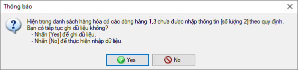
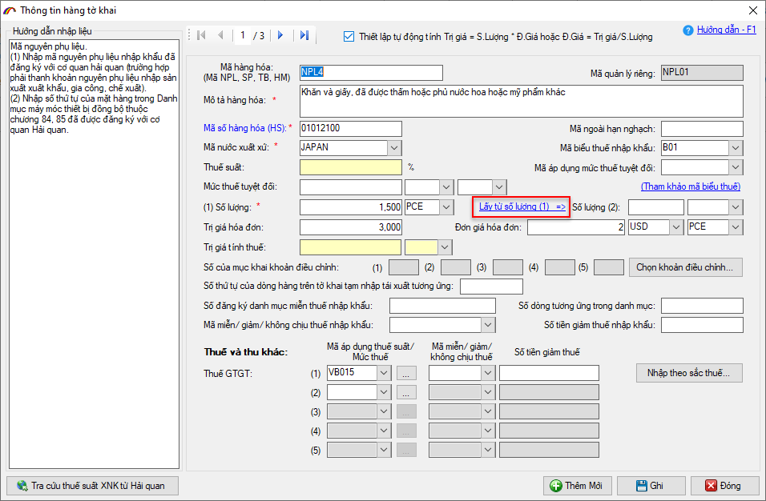
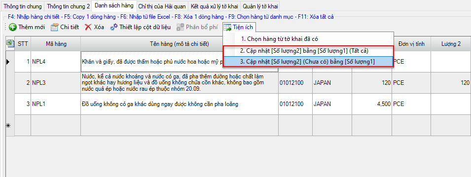

NHỮNG THAY ĐỔI TRÊN BẢN ECUS5VNACCS 2018
(Phiên bản update 28/10/2020)
Phần mềm ECUS5VNACCS2018 - Ngày phát hành 17/11/2020
Phiên bản cập nhật ngày 28/10/2020 được phát hành ngày 17/11/2020 bổ sung chức năng với nội dung như sau.
Thực hiện quy định về việc khai báo đầy đủ vào chỉ tiêu Số lượng (1) và Số lượng (2) trên tờ khai Hải quan theo đúng hướng dẫn tại Phụ lục I Thông tư 39/2018/TT-BTC ngày 20/04/2018. Phần mềm ECUS5VNACCS tiến hành nâng cấp đưa ra cảnh báo để người dùng nhập đầy đủ thông tin vào chỉ tiêu Số lượng (2). Đồng thời bổ sung các tiện ích giúp doanh nghiệp có thêm lựa chọn nhập nhanh Số lượng (2).
Sau đây là phần giới thiệu chi tiết.
1. Hướng dẫn cách nhập dữ liệu cho Số lượng (1) và Số lượng (2).
a) Đối với tờ khai nhập khẩu
Căn cứ pháp lý tại mục 1.83 và 1.84 phụ lục I TT 39/2018/TT-BTC hướng dẫn các chỉ tiêu khai báo trên Tờ khai điện tử đối với hàng hóa nhập khẩu.
Số lượng (1) - Căn cứ pháp lý theo hướng dẫn tại mục 1.83 Phụ lục I Thông tư 39/2018/TT-BTC cụ thể như sau:
- Ô 1: Nhập số lượng hàng hóa nhập khẩu của từng mặt hàng theo đơn vị tính trong Danh mục hàng hóa xuất khẩu, nhập khẩu Việt Nam hoặc theo thực tế hoạt động giao dịch.
Lưu ý:
(1) Trường hợp hàng hóa chịu thuế tuyệt đối, nhập số lượng theo đơn vị tính thuế tuyệt đối theo quy định.
(2) Có thể nhập đến 02 số sau dấu thập phân.
(3) Trường hợp số lượng thực tế có phần thập phân vượt quá 02 ký tự, người khai hải quan thực hiện làm tròn số thành 02 ký tự thập phân sau dấu phẩy để khai số lượng đã làm tròn vào ô này, đồng thời khai số lượng thực tế và đơn giá hóa đơn vào ô "Mô tả hàng hóa" theo nguyên tắc sau: "mô tả hàng hóa #& số lượng" (không khai đơn giá vào ô "Đơn giá hóa đơn").
- Ô 2: Nhập mã đơn vị tính theo Danh mục hàng hóa xuất khẩu, nhập khẩu hoặc theo thực tế giao dịch. (tham khảo bảng "Mã đơn vị tính" trên website www.customs.gov.vn)
Lưu ý: Trường hợp hàng hóa chịu thuế tuyệt đối, nhập mã đơn vị tính thuế tuyệt đối theo quy định (tham khảo mã đơn vị tính tại "Bảng mã áp dụng mức thuế tuyệt đối" trên website www.customs.gov.vn).
Số lượng (2) - Căn cứ pháp lý theo hướng dẫn tại mục 1.84 Phụ lục I Thông tư 39/2018/TT-BTC cụ thể như sau:
- Ô 1: Nhập số lượng hàng hóa nhập khẩu của từng mặt hàng theo đơn vị tính trong Danh mục hàng hóa xuất khẩu, nhập khẩu Việt Nam. Có thể nhập đến 02 số sau dấu thập phân.
- Ô 2: Nhập mã đơn vị tính theo Danh mục hàng hóa xuất khẩu, nhập khẩu Việt Nam. (tham khảo bảng "Mã đơn vị tính" trên website www.customs.gov.vn)
b) Đối với tờ khai xuất khẩu
Căn cứ pháp lý tại Mục 2.72 và 2.73 phụ lục I thông tư 39/2018/TT-BTC hướng dẫn các chỉ tiêu khai báo trên Tờ khai điện tử đối với hàng hóa xuất khẩu.
Số lượng (1) - Căn cứ pháp lý theo hướng dẫn tại mục 2.72 Phụ lục I Thông tư 39/2018/TT-BTC cụ thể như sau:
- Ô 1: Nhập số lượng hàng hóa xuất khẩu của từng dòng hàng theo đơn vị tính trong Danh mục hàng hóa xuất khẩu, nhập khẩu Việt Nam.
(1) Trường hợp hàng hóa chịu thuế tuyệt đối, nhập số lượng theo đơn vị tính thuế tuyệt đối theo quy định.
(2) Có thể nhập đến 02 số sau dấu thập phân.
(3) Trường hợp hàng hóa phải nộp phí cà phê, hồ tiêu, hạt điều, bảo hiểm cà phê, nhập số lượng theo đơn vị tính phí/bảo hiểm theo quy định.
(4) Trường hợp số lượng thực tế có phần thập phân vượt quá 02 ký tự, người khai hải quan thực hiện làm tròn số thành 02 ký tự thập phân sau dấu phẩy để khai số lượng đã làm tròn vào ô này, đồng thời khai số lượng thực tế và đơn giá hóa đơn vào ô "Mô tả hàng hóa" theo nguyên tắc sau: "mô tả hàng hóa#&số lượng" (không khai đơn giá vào ô "Đơn giá hóa đơn").
- Ô 2: Nhập mã đơn vị tính theo Danh mục hàng hóa xuất khẩu, nhập khẩu, (tham khảo bảng mã đơn vị tính trên website Hải quan: www.customs.gov.vn)
Trường hợp hàng hóa chịu thuế tuyệt đối, nhập mã đơn vị tính thuế tuyệt đối theo quy định, (tham khảo mã đơn vị tính tại Bảng mã áp dụng mức thuế tuyệt đối trên website Hải quan: www.customs.gov.vn).
Số lượng (2) - Căn cứ pháp lý theo hướng dẫn tại mục 2.73 Phụ lục I Thông tư 39/2018/TT-BTC cụ thể như sau:
- Ô 1: Nhập số lượng hàng hóa xuất khẩu của từng mặt hàng theo đơn vị tính trong Danh mục hàng hóa xuất khẩu, nhập khẩu Việt Nam. Có thể nhập đến 02 số sau dấu thập phân.
- Ô 2: Nhập mã đơn vị tính theo Danh mục hàng hóa xuất khẩu, nhập khẩu Việt Nam. (tham khảo bảng "Mã đơn vị tính" trên website Hải quan: www.customs.gov.vn)
2. Hiển thị thông báo cảnh báo người dùng.
Phần mềm sẽ hiển thị cảnh báo để người dùng biết thông tin chi tiết các dòng hàng có phần Số lượng (2) chưa được nhập như sau:

Cảnh báo được hiển thị khi người dùng thực hiện việc GHI dữ liệu hoặc Khai báo tờ khai lên Hải quan.
3. Các tiện ích nhập liệu nhanh số lượng (2)
Trong trường hợp Số lượng (1) và Số lượng (2) khác nhau, doanh nghiệp bắt buộc phải tự nhập Số lượng (2) bằng cách nhập thủ công hoặc nhập từ file excel.
Trường hợp Số lượng (1) và (2) là giống nhau thì khi nhập liệu doanh nghiệp nhập vào Số lượng (1) sau đó nhấn vào link "Lấy từ số lượng 1" để đưa vào Số lượng (2)

Hoặc khi nhập dữ liệu trên danh sách, bạn chỉ cần nhập vào Số lượng (1) sau đó cập nhật đồng loạt cho Số lượng (2) bằng cách nhấn vào nút Tiện ích và chọn 1 trong 2 lựa chọn sau:

Cập nhật [Số lượng 2] bằng [Số lượng 1] (Tất cả): Bạn chọn lựa chọn này trong trường hợp muốn cập nhật Số lượng (2) của tất cả các dòng hàng trên tờ khai về giống với Số lượng (1).
Cập nhật [Số lượng 2] (Chưa có) bằng [Số lượng 1]: Bạn chọn lựa chọn này trong trường hợp muốn cập nhật Số lượng (2) bằng Số lượng (1) cho các dòng hàng trên tờ khai có Số lượng (2) chưa được nhập. Các dòng hàng đã có dữ liệu Số lượng (2) sẽ không bị thay đổi.
Bản quyền © thuộc về Công ty TNHH Phát triển công nghệ Thái Sơn